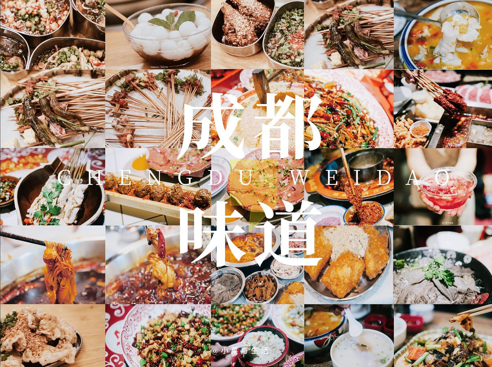

- 
-

成都——天府之国
成都是一座包罗万象的城市，也是我国文化古城之一，早在2000多年前的战国时代，就是蜀国的成都，蜀王开明第九世，就将都城迁到这里，定名“成都”。九天开出一成都，万户千门入画门，草树云山如锦绣，秦川得及此间无。此诗是说成都仿佛天上的一座城市，这里的千家万户像画一样美丽。碧草、绿树、白云、青山，如同锦绣一般。物产丰富，景色秀丽，就连京城所在的“八百里秦川”的关中平原也难以同它媲美。巴适的天府之城，享受巴适的生活，美食好吃的不得了，人也乖乖的很，要得！
成都美食历史悠久、品种繁多，号称“世界美食之都”！单是街头巷尾那百吃不厌的地道小吃就能令人回味无穷。放眼成都，城中条条街道有餐饮，从早到晚不间断，这就是成都的美食文化，这就是成都人的幸福生活。